MySQL是如何存储数据的
执行一条 select 语句，在 MySQL 中发生了什么？
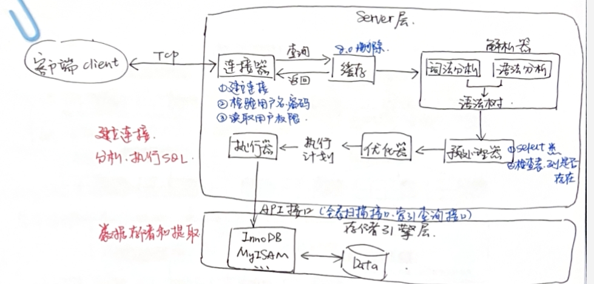
MySQL 数据文件存放在哪
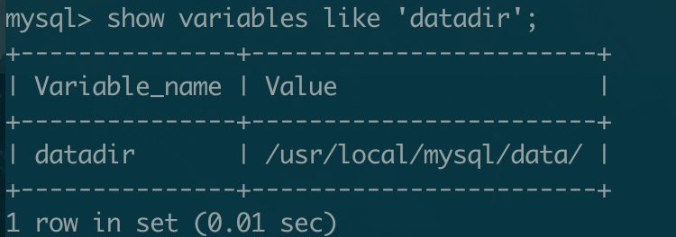
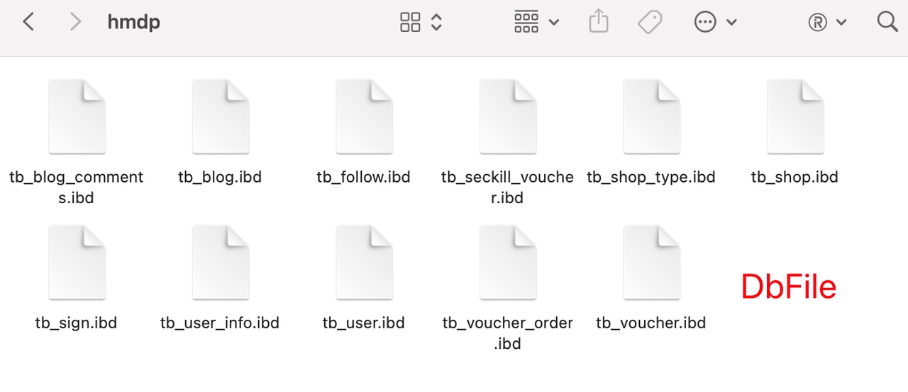
InnoDB 数据组织方式
InnoDB 的行记录
作为 MySQL 用来存储数据的默认存储引擎 InnoDB，在内部到底是如何存储的呢？
InnoDB 总共有四种数据记录的行格式，其中只需要知道 Compact 和 Dynamic，Compact 是一种紧凑的行格式，目的是能在数据页中尽可能多的存储更多记录，Dynamic 作为 5.7 版本之后默认的行格式是由 Compact 发展来的。
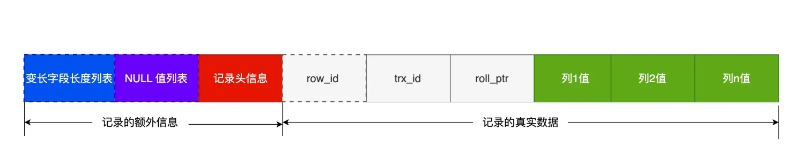
记录的额外信息
- 变长字段长度列表：先找出所有变长字段，对变长字段列逆序存放
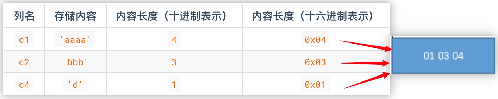 - NULL 值列表：先找出所有允许 null 的字段，用比特 0 表示不为 NULL，用比特 1 表示为 NULL，仍然对这些字段列逆序存放
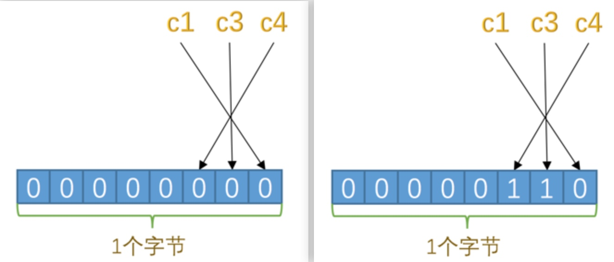
为什么要对变长字段长度列表和 NULL 列表进行「逆序排列」？因为连接不同行记录的指针指向行记录的位置是记录头信息和真实数据之间的位置，这样的好处是向左可以读到记录的额外信息，向右可以直接读到真实数据。而逆序存放的目的是使位置靠前的记录的真实数据和数据对应的字段长度可以同时在一个 CPU Cache Line 中，提高 CPU 缓存的命中率，提升访问性能。
- 记录头信息：固定的默认 5 字节，存放着我们耳熟能详的一些字段，比如 delete_mask, record_type, next_record。
- 变长字段长度列表：先找出所有变长字段，对变长字段列逆序存放
记录的真实数据
- 表中除了值为 NULL 外所有字段的列数据
既然本来就要存储变长数据，为什么在前面还要单独记录变长字段的列表呢？变长字段的长度是不固定的，直接存储字段值会导致无法准确判断一个字段的结束位置。
- 默认生成的隐藏列
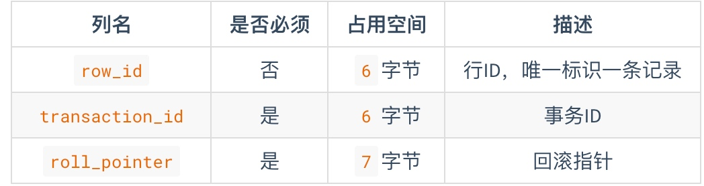- row_id 不是必须的，只有数据表中没有主键且没有 UNIQUE 字段时，MySQL 才会为我们生成，作为行记录排序的依据。
- transaction_id 记录最后一次对该记录修改的事务id。
- roll_pointer 存储 MVCC 历史版本数据。
- 表中除了值为 NULL 外所有字段的列数据
一个数据页的大小是 16KB = 16384 字节，而一个数据行最长可以为 65535 字节，所以当一个数据页中的剩余空间无法存储一条数据记录的完整信息时，Compact 会这样做：
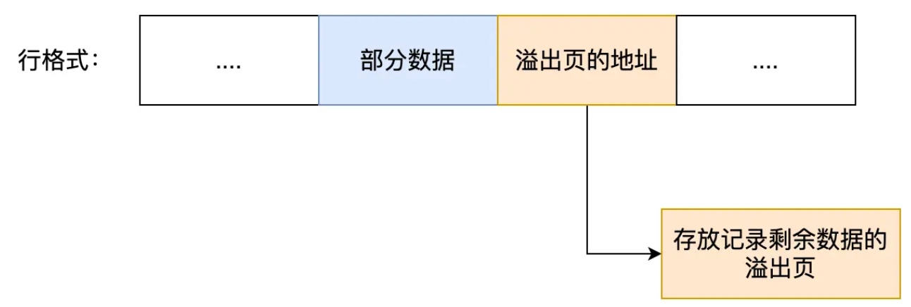
这里就简单提一下，实际上还涉及到内存碎片等问题。
InnoDB 的数据页
数据页
链表中的节点按照主键值从小到大的顺序连接而成：
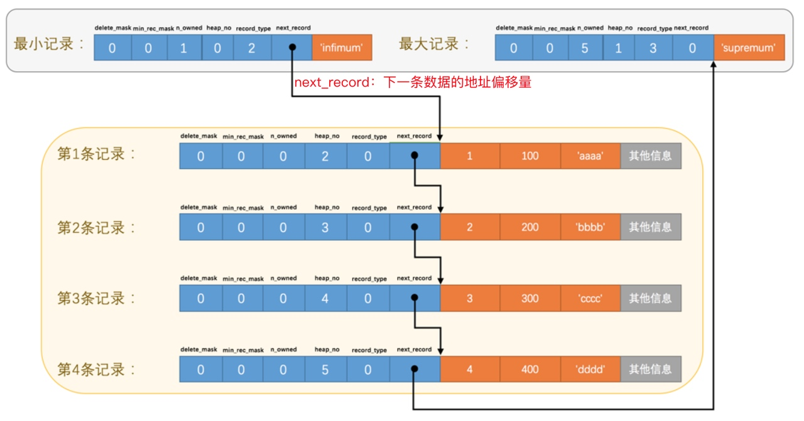
页目录
将所有正常记录（包括最大、最小）划分为几个组；每个组最后一个记录为“带头大哥”，其 n_owned 属性表示组内的记录数；“带头大哥”在页面中的地址偏移量存储为一个 2 Bytes 的槽 slot，用作页目录：
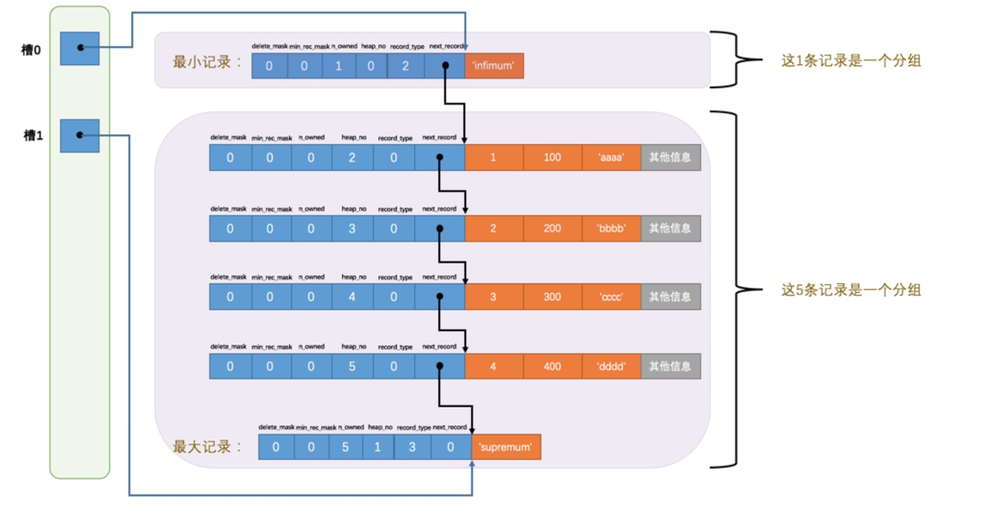
每个分组的记录条数规定：最小记录所在分组只能有一条记录、最大记录所在分组只能在 1
8 条之间、剩下的分组记录只能在 48 条之间。
根据页目录的数据查找：
- 通过二分法确定该记录所在的槽，并找到该槽中主键值最小的那条记录。
- 通过记录的 next_record 属性遍历该槽所在的组中的各个记录。
InnoDB 的索引
索引是什么？它是一种用于快速查询、检索数据的数据结构。
为什么要建立索引：
- 在单个数据页中查找数据：以「非主键列」作为搜索条件，无法通过页目录进行二分查找定位行记录。
- 在很多数据页中查找数据：无论是主键列还是非主键列，无法快速定位到记录所在的页，只能沿着双向链表从第一个数据页顺序遍历。
笼统的来说，索引的优点就是加快检索数据的速度，减少 IO 次数。
索引方案的设计
大原则：下一个数据页中行记录的主键值必须大于上一个数据页中的所有行记录的主键值。
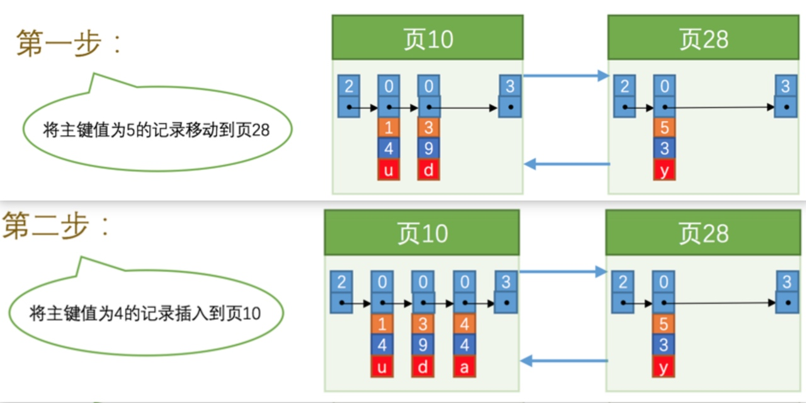给所有数据页也像数据页内部一样建立一个目录项，目录项包括：①页中记录「最小主键值」；②页号。

在 InnoDB 中复用数据页结构来存储目录项，形成 B+ 树数据结构：
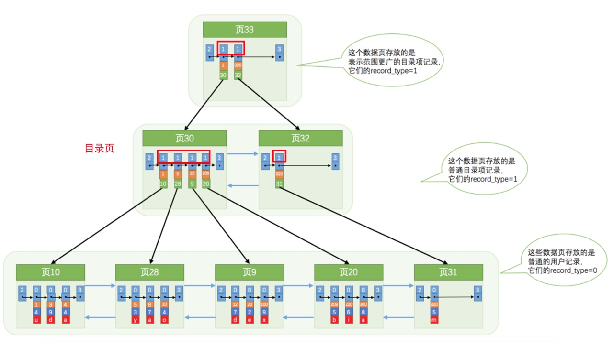
InnoDB 根据主键的查询方案（以主键索引为例）：
- 确定存储目录项的页：从根节点开始，对目录页「逐层采用二分查找」定位记录行所在的那条目录项记录。
- 确定记录行所在的叶子数据页。
- 通过数据页的页目录采用「二分查找」定位记录行所在位置。